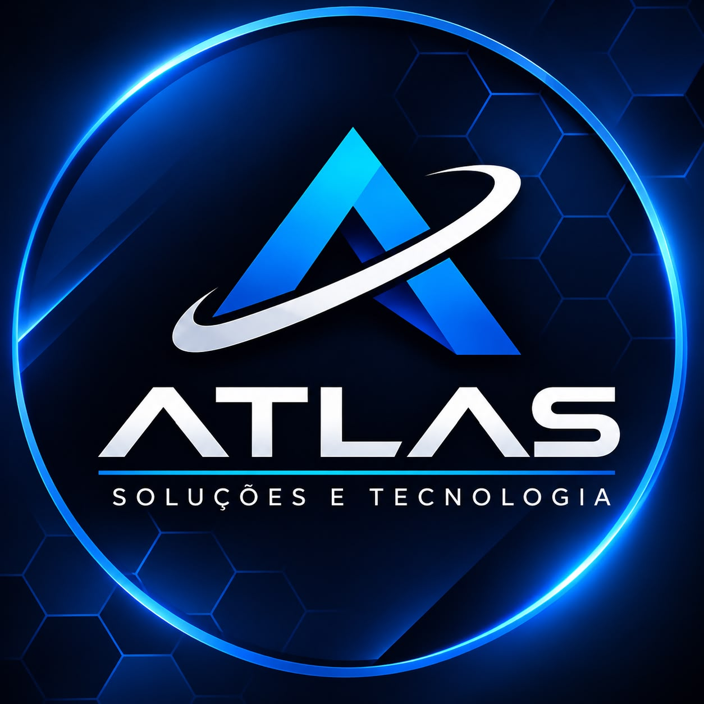

TOTVS Protheus
Consultoria, desenvolvimento, customizações, manutenção e otimização.
Saiba mais →Consultoria em ERP, desenvolvimento de sistemas, integrações e infraestrutura de TI para empresas que buscam eficiência, segurança e crescimento.
A Atlas conecta tecnologia, estratégia e operação para ajudar empresas a evoluírem com segurança. Atuamos próximo ao cliente, entendendo a realidade do negócio e propondo soluções que simplificam processos e fortalecem resultados.
Do planejamento à sustentação, oferecemos uma visão completa para integrar sistemas, otimizar recursos e manter suas operações funcionando com eficiência.
Entenda nossas soluções →Atuação integrada em gestão, desenvolvimento e infraestrutura.
Consultoria, desenvolvimento, customizações, manutenção e otimização.
Saiba mais →Suporte, parametrizações, melhorias e consultoria especializada.
Saiba mais →Consultoria e soluções para gestão e processos empresariais.
Saiba mais →Sistemas personalizados para atender às necessidades de cada negócio.
Saiba mais →Integração entre plataformas, sistemas e serviços para automatizar processos.
Saiba mais →Implantação, configuração, manutenção e suporte de ambientes tecnológicos.
Saiba mais →Análise de necessidades, planejamento e orientação tecnológica.

Os profissionais da Atlas possuem experiência em projetos e operações de tecnologia em diferentes segmentos, incluindo passagens por órgãos públicos e atuação em ambientes corporativos de alta complexidade.
Essa vivência proporciona uma visão abrangente dos desafios tecnológicos, desde sistemas de gestão e processos críticos até desenvolvimento, integrações, infraestrutura e sustentação de soluções.
Experiência em projetos envolvendo órgãos públicos.
Atuação em ambientes corporativos complexos.
Conhecimento em sistemas de gestão e ERPs.
Desenvolvimento, integração e sustentação.
Relacionamento personalizado e atenção às necessidades reais de cada cliente.
Soluções que simplificam processos e elevam a qualidade da operação.
Conhecimento técnico alinhado aos objetivos e ao crescimento do negócio.
Compromisso com estabilidade, sustentação e evolução dos ambientes.
Converse com nossa equipe e descubra como podemos ajudar a transformar seus desafios em soluções.